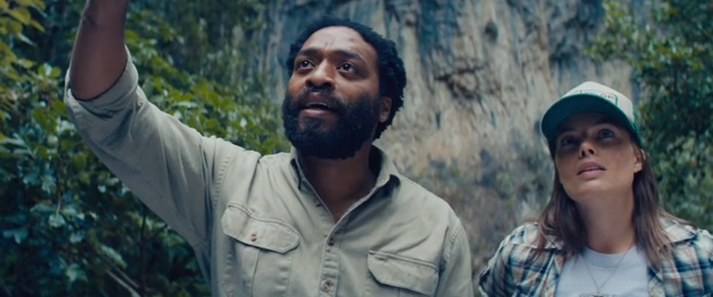
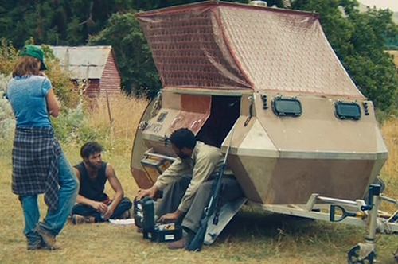
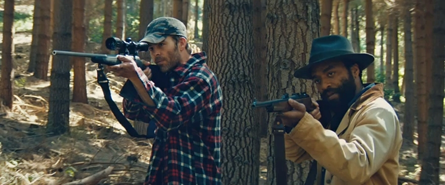

Z for Zachariah is a post-apocalyptic science fiction drama film, which is loosely based on the novel of the same name by American novelist Robert C. O'Brien. The film, written by Nissar Modi and directed by Craig Zobel, was produced by Zik Zak Filmworks, an Icelandic film production company. Shot mostly in New Zealand, standing in for the Eastern United States, the whole film features only 3 actors.
Ann Burden (Margot Robbie) is a young girl who lives alone on her family’s farmstead that is sheltered from radioactive contaminants by rocky hillsides of the valley it is located in, as well as favourable weather patterns. She survives by farming the land for vegetables, rearing chickens for eggs and catching fish in a small pond which also serves her as an abundant ground-fed water supply that is free from radioactive poisoning affecting other water sources throughout the region.
Thinking that she is the only survivor of a nuclear war since the day when her family never returned back from a search expedition, Ann one day unexpectedly encounters a stranger clad in a radiation-proof suit. The fellow survivor, before Ann can warn him, undresses, takes a plunge in a radioactive stream, and immediately comes down with an acute radiation poisoning.
Ann takes the stranger into her farmhouse and nurses him back to health with help of anti-radiation serum she finds in the pushcart containing all man’s possessions. After the stranger comes to, he reveals himself as John Loomis (Chiwetel Ejiofor), a highly-skilled engineer, who, protected by his radiation suit, has travelled a long way from a distant military bunker until he reached the safe haven of Burden's valley.
Even before he fully recovers, John uses his expertise to advise Ann on how to manually pump petrol from the local petrol station (electricity is not working in this post-apocalyptic world), so that instead of menial hoeing, she can once more plough the field with the farm’s long-disused tractor, and helps her with many other things. Before too long, Ann accepts John, who slowly regains his strength, into her heart, and he gradually becomes an integral part of her rural life.
Later, when Ann shows him an old petrol-powered electric generator, John speculates that power might be derived from the nearby waterfall by connecting the generator to a water-wheel fashioned from the Burden church’s wooden structure. Ann is uncomfortable with the proposal, citing her deep Christian beliefs and her father’s past involvement in the church as a preacher. Himself atheist, John decides not to push the matter on, at least for the time being.
Before Ann and John’s cohabitation could develop to a fully-blown intimate relationship, suddenly, out of the nowhere, appears a third survivor, Caleb (Chris Pine.). Although Ann welcomes Caleb into the farmhouse, John is suspicious of the new arrival’s backstory and motives, and becomes quickly jealous of Caleb, who uses the faith he shares with Ann to help him win her heart.
Seeing that the circumstances are now more favourable, John revives his water-generated-electricity idea and Caleb persuades Ann to go forward with the project (arguing that what is inside the church, i.e. God, is important, not the building itself). Soon, work commences on stripping down the church for the material.
When the water-wheel is almost finished, the three hold a celebratory dinner, after which heavily-drunk John tells Ann he loves her, before passing out on the bed. Deeply disappointed and sexually starved Ann joins Caleb in the bathroom, where the two engage in intercourse.
Following the incident, the tension between John and Caleb deepens further. As the two men finish the water-wheel, moving it, and its wooden chute, into its place atop the waterfall, Caleb, encumbered by the bulky radiation suit he is wearing, slips twice during his rope-assisted climb up the slippery rock-side of the waterfall. John helps him first time, but when Caleb loses his balance for the second time, the two men silently lock glances, with John clutching the rope on whose other end Caleb’s life teeters on the cliff's edge.

After John returns to the farmhouse, Ann apologises for her earlier transgression, but John waves this away, saying that Caleb decided to leave anyway, travelling further south in search of other settlements. Ann takes this news badly, running up the road after Caleb, but not finding him. The farmhouse’s electric lights and refrigeration are restored and Ann discovers that John has moved her beloved church organ, along with a couple of pews, into the barn, obviously realising that while he will likely never become a religious person, it would be perhaps wiser to at least tolerate Ann’s faith…